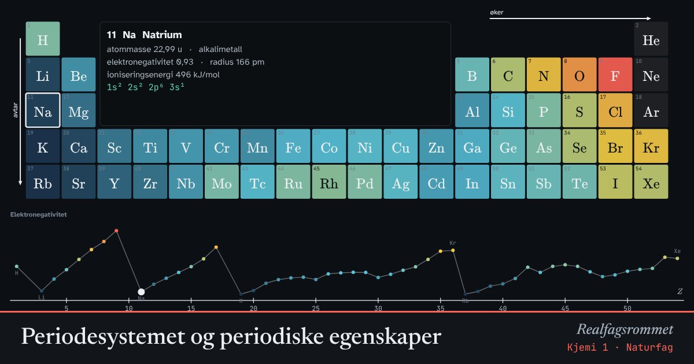

Periodesystemet og periodiske egenskaper
Egenskapene til grunnstoffene gjentar seg periodisk. Velg en egenskap og se mønsteret både i tabellen og i grafen under.
Start animasjonen
Formler
Om animasjonen
Grunnstoffene står ordnet etter atomnummer. I samme gruppe (kolonne) har atomene like mange valenselektroner og ligner hverandre kjemisk.
Mot høyre i en periode øker kjerneladningen, mens antall skall er det samme. Elektronene trekkes tettere inn: radien avtar, og elektronegativitet og ioniseringsenergi øker.
Nedover i en gruppe får atomene flere skall. Valenselektronene er lenger fra kjernen og skjermet av indre elektroner. Da blir radien større og ioniseringsenergien lavere.
Grafen nederst viser verdien mot atomnummer. Toppene i ioniseringsenergi ligger hos edelgassene.
Prøv dette
- Hvilket grunnstoff har høyest elektronegativitet? Hvorfor?
- Forklar hvorfor kalium er mer reaktivt enn natrium.
- Finn to steder der ioniseringsenergien faller litt selv om man går mot høyre. (Tips: Be→B og N→O.)
- Hvorfor har edelgassene ingen elektronegativitet i tabellen?
Kompetansemål
- Naturfag: Kjemiske bindinger og stoffenes egenskaper
- Kjemi 1: Periodesystemet og elektronkonfigurasjon
Mer om atomer, periodesystemet og binding
- Atomets oppbygning og elektronkonfigurasjon
- Bohrs atommodell og linjespektre
- Kjemisk binding og elektronegativitet
- Molekylformer: elektronpar frastøter hverandre
- Kjemiske bindinger og stoffenes egenskaper